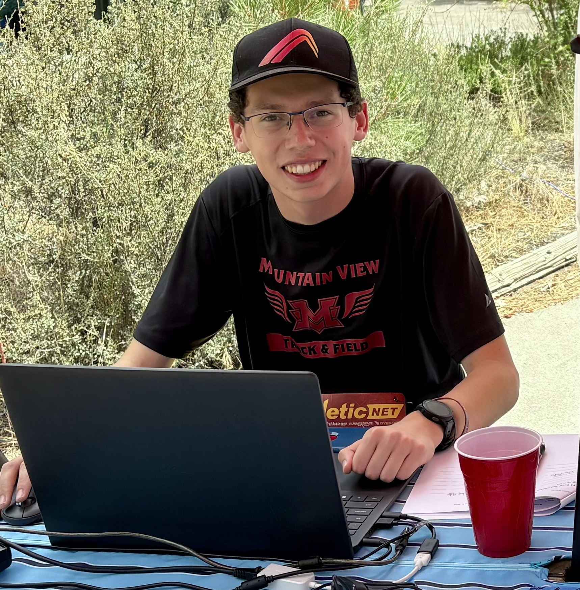
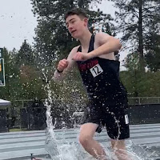

 |
Brendan Medina |
Head Timer & Head Developer Favorite Event: XC 5000m Base of Operations: Bend, OR Brendan started timing track meets in his freshman year of high school. Since then, he has timed track, cross country, and developed an application for timing. He runs PhotoFinishPro Timing along with Kevin Mattox and Landon Martin. |
Kevin Mattox |
Timer & Head of Mechanical Favorite Event: Base of Operations: Bend, OR |
|
 |
Landon Martin |
Timer & Head of Website Favorite Event: Track 2000m Steeplechase Base of Operations: Bend, OR Landon Martin started running Cross Country in 8th Grade, and is now a varsity athlete for the Mountain View High School Cross Country and Track & Field teams. |
Claire Mattox |
Creative Consultant Favorite Event: |